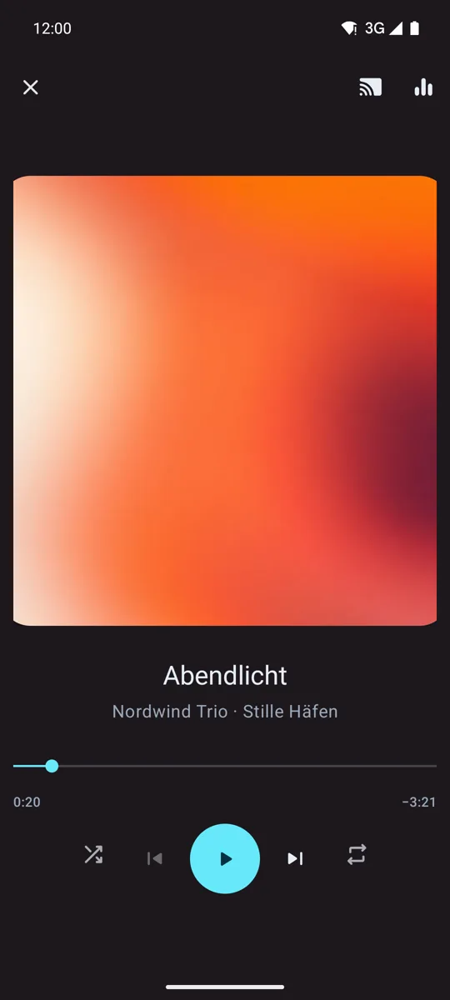
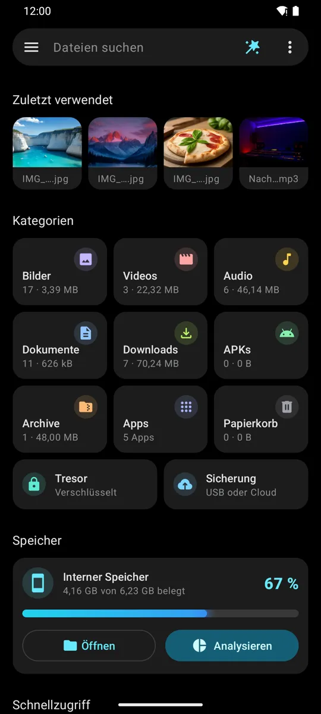
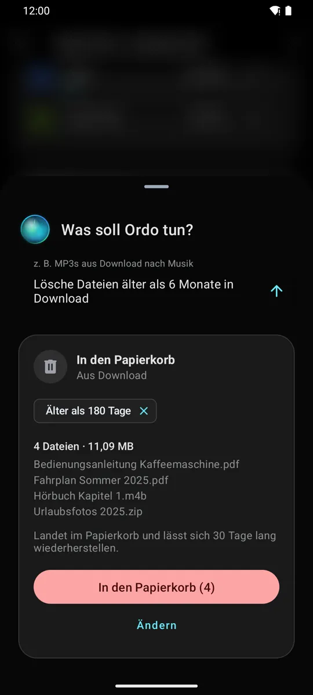
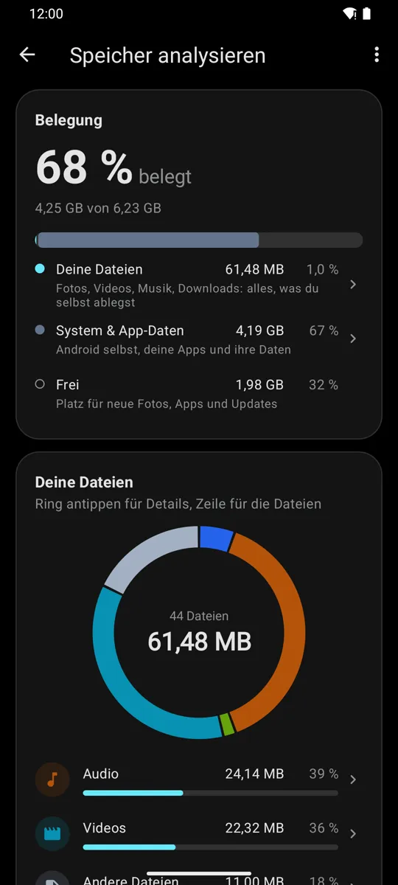
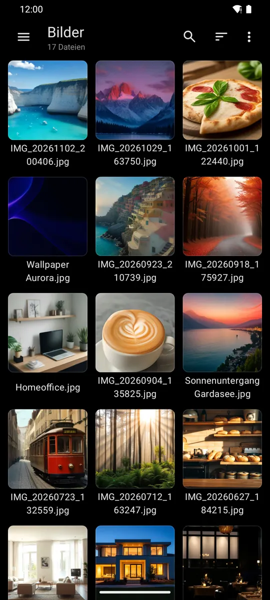
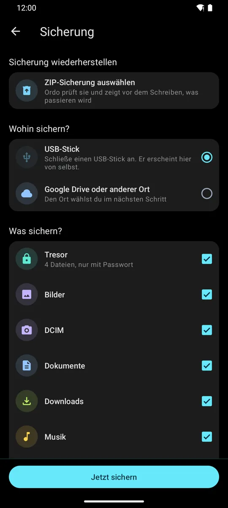
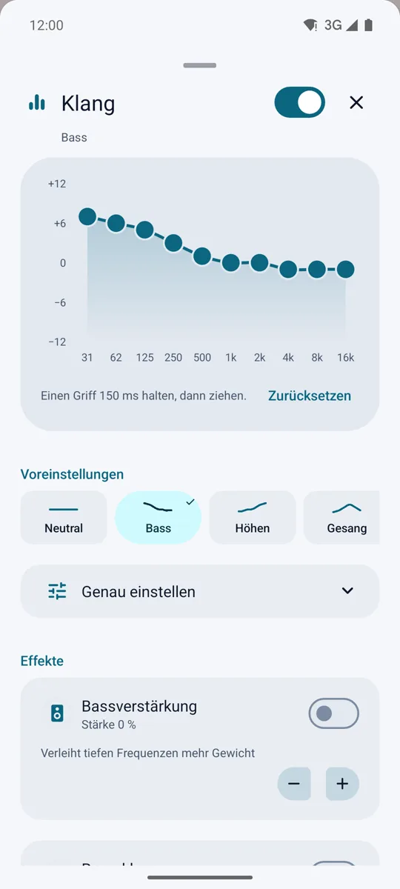
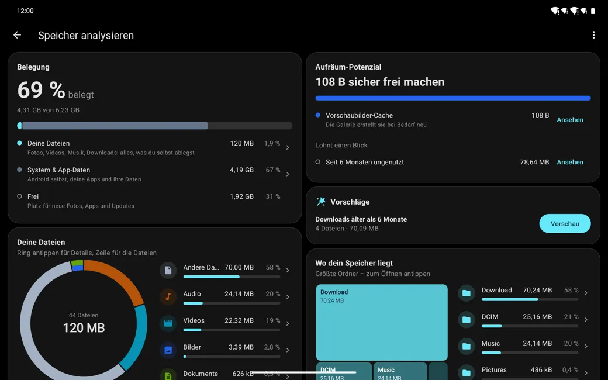

Alles in Ordnung.
Ordo ist ein Dateimanager für Android mit einer KI, die komplett auf deinem Handy läuft. Kostenlos, quelloffen, ohne Werbung und ohne Tracking.
- Ohne Werbung
- Ohne Tracking
- Open Source, GPL-3.0
- Ab Android 6.0
Sieh, was deinen Speicher füllt.
Während die Analyse läuft, füllt sich ein Ring mit den gefundenen Dateiarten. Am Ende wird er zur Übersicht: deine Dateien, System und freier Platz, die Ordner mit dem meisten Platz und was sich sicher frei machen lässt.
- Große Dateien, Duplikate, alte APKs. Dazu lange nicht genutzte Dateien, leere Ordner und der Vorschaubilder-Cache, jede Liste mit Vorschau.
- Interner Speicher, SD-Karte, USB-Stick. Jede Art und jeder Ordner öffnet sich als eigene Seite, größte zuerst.
- Gelöscht wird nur auf deinen Tipp. Und zwar in den Papierkorb: 30 Tage lang lässt sich alles wiederherstellen.
Nachgezeichnet nach einer Aufnahme vom Testgerät.
Sag einfach, was du willst.
Tippe oder diktiere einen Satz. Ordo macht daraus einen Plan, zeigt ihn dir und handelt erst, wenn du bestätigst. Ein Tipp macht es rückgängig. Das Sprachmodell läuft auf deinem Handy, deine Befehle und Dateinamen verlassen es nicht.
Echte Befehle und Ordos Antworten, gemessen am 14.11.2026. In der App dauert ein Befehl rund 14 Sekunden, hier ist das Warten verkürzt.
- Löschen heißt immer Papierkorb. Und nur, wenn der Satz es klar verlangt. „Nicht löschen“ wird nie als Löschen verstanden.
- Systemordner bleiben tabu. Versteckte Ordner und Android/data auch. Den Kamera-Ordner fasst Ordo nur an, wenn du ihn nennst.
- Ordo rät nicht. Ist ein Ordner unklar, fragt Ordo nach. Vorhandene Dateien werden nie überschrieben.
- Modell
- Qwen3.5-4B, auf dem Handy mit llama.cpp
- Einrichtung
- Aus, bis du sie einschaltest. Einmaliger Download von rund 2,6 GB, standardmäßig nur über WLAN. Danach offline.
- Voraussetzungen
- 64-Bit-Handy mit neuerem Arm-Chip (Armv8.2, Dot-Product), mindestens 10 GB RAM (Handys mit 12 GB), rund 3,1 GB frei
- Tempo
- Rund 14 Sekunden pro Befehl auf einem Galaxy Tab S9 Ultra
Nachgezeichnet. Die echte Aufnahme steht weiter unten.
Sperr Privates weg. Sichere, was zählt.
Der Tresor verschlüsselt Dateien mit AES-256-GCM und öffnet sich mit deiner Bildschirmsperre. Der Schlüssel liegt im Schlüsselspeicher deines Handys und verlässt es nie.
- Sicherung als ZIP. Ordner und Tresor auf einen USB-Stick oder an jeden Ort, den dein Handy anbietet, etwa Google Drive. Auf Wunsch mit Passwort.
- Wiederherstellen ohne Überschreiben. Normale Dateien kommen zurück, ohne vorhandene zu ersetzen.
- Lieber abbrechen als halb sichern. Wird eine Datei mittendrin unlesbar, bricht die Sicherung ab, statt sie gekürzt zu speichern.
Nachgezeichnet, mit Beispieldateien.
Deine Musik klingt, wie du willst.
Tipp ein Lied an, und Ordo spielt es ab: mit Cover, Warteschlange und Steuerung in der Benachrichtigung, auf dem Sperrbildschirm und über die Kopfhörertasten.
- Klang nach Gehör. 10-Band-Equalizer mit Kurve und Voreinstellungen von Bass bis Klassik. Für den letzten Feinschliff gibt es genaue −/+-Tasten.
- Alle Lieder gleich laut. ReplayGain und R128 gleichen die Lautstärke an. Dazu kommen Balance, Mono und ein Tempo, das die Tonhöhe hält.
- Zum Einschlafen. Der Timer stoppt nach 15 bis 60 Minuten oder am Titelende und blendet sanft aus.
- Abspielen, wo du willst. Ein Tipp auf „Abspielen auf …“ schickt die Musik an Bluetooth-Kopfhörer, Lautsprecher oder ein Cast-Gerät.
- Eigenes Symbol. Auf Wunsch liegt „Ordo Musik“ als eigene App auf dem Startbildschirm.

Aufnahme aus der App, mit Beispielliedern.
Nichts verlässt dein Handy.
Ordo sammelt keine Daten. Deine Dateien, deine Befehle an die KI und deine Einstellungen bleiben auf deinem Gerät.
- Keine Werbung, keine Tracker, keine Analyse.Auch keine In-App-Käufe. Ordo ist komplett kostenlos, die KI-Befehle eingeschlossen.
- Online nur, wenn du es willst.Für Server, die du selbst einrichtest, und einmal für den Download des KI-Modells. Von sich aus baut Ordo keine Verbindung ins Internet auf.
- Die KI rechnet auf deinem Handy.Das Sprachmodell läuft auf dem Gerät. Befehle und Dateinamen gehen an keinen Server.
- Nichts in der Cloud-Sicherung.App-Daten sind von Cloud-Sicherung und Geräteumzug ausgenommen. Server-Passwörter bleiben auf deinem Handy.
So sieht Ordo wirklich aus.
Aufnahmen aus der App auf einem Testgerät, mit Beispieldateien.







Und alles, was ein Dateimanager können muss.
Netzwerk
FTP, SFTP, SMB und WebDAV direkt einbinden. Der eingebaute FTP-Server teilt Dateien im WLAN.
Archive
ZIP, TAR und 7z erstellen und entpacken. Beim Entpacken landet nichts außerhalb des gewählten Ordners.
Suche
Nach Namen oder nach Text in Dateien, auf Wunsch mit regulären Ausdrücken.
Mit Dateien arbeiten
Kopieren, verschieben und teilen mit Tempo und Restzeit. Viele Dateien auf einmal nach Muster umbenennen.
Für Profis
Root- und Shizuku-Zugriff, Linux-Rechte, symbolische Links und SELinux-Kontext.
Nach deinem Geschmack
Fünf Akzentfarben oder die deines Hintergrundbilds. Hell, dunkel oder echtes Schwarz, Animationen voll, dezent oder aus.
Freie Software, offen für alle.
Ordo steht unter der GNU GPL 3.0. Jeder kann den Quelltext lesen, prüfen und Ordo selbst bauen.
Ordo ist ein Fork von Material Files von Hai Zhang. Dessen Dateisystem, Archiv- und Server-Unterstützung sind die Grundlage dieser App. Danke!
Für die KI nutzt Ordo llama.cpp und das Modell Qwen3.5 (Apache-2.0), für die Verschlüsselung Tink.
Hol dir Ordo.
Ordo ist noch in Entwicklung. Bei Google Play erscheint es als „Ordo – Dateimanager mit KI“. Bis dahin gibt es Testversionen auf GitHub.
Ab Android 6.0, auf Deutsch und Englisch. Die KI-Befehle brauchen ein Handy mit mindestens 10 GB RAM.